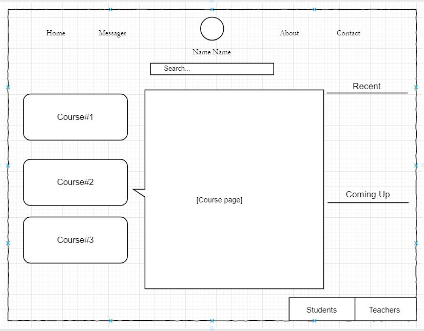

What is Rlearn?
Rlearn is a new learning management system aimed towards students ranging from primary school to universities. We believe that most LMS systems that are available today are simply not good enough to engage most students.
We here at Rlearn believe that logging into your school LMS should feel like using any other application students use, like social media. We believe that students should be able to do communicate with staff, teachers and their peers in the most efficient way possible and should not have the need to resort to other applications when it comes to school related work.
Rlearn also wants to make sure that students never miss school announcements and have access to the most important information on the frontpage.

The LMS
A good learning management system which covers a such a wide range of functions would greatly benefit from the ability to let administrators (I.e. Teachers) to create their own sub sections or folders on the site, and arrange the content they upload to it, this would mean that if a teacher wanted to upload all necessary information on a topic or lesson, it wouldn’t clutter the whole page.
If teachers and faculty members have their own log ins or profiles too, this may make communication with students easier, as regular users (students) will be able to see who has posted what, and therefore will know who to ask if there is an issue with a subject or assignment.
It may also be useful to allow staff to upload content, but hide it from students until they choose to reveal it, this could help staff prepare for and plan lessons with the necessary content before the date, similarly they could be able to upload information on an assignment without revealing it before the appropriate time.
Students would benefit from a system that recognises their log in details and brings them directly to a homepage which has their specific subjects on it / courses, to make navigation and finding assignments quick and easy.
Assignment submission pages should also be clear if they are included in the system, in higher education situations a clear submission page is important for both students and teachers, and a faulty site is the last thing a user will want to have to deal with when submitting important work, because of this an assigment submission page should include a place for people to test uploading a draft, and ask for confirmation when someone is uploading the file (assuming users can only upload a file once), and indicators would be appreciated by users too, showing whether or not an assignment has been submitted, and the due date and time to be met.

Communication within the LMS
Within the LMS pages there should be a list of contact details for staff (and perhaps for staff, one for students), to help students reach their email or office phone, and their office number for a 1 to 1 meeting. It may possibly be good to have an Email system within the LMS, but it would likely not be necessary as most academic institutions have their own email systems already.
Communication by email can present issues though, if a student needs immediate help with a simple question, or has a serious issue submitting an assignment, communication by email may not be fitting for the situation, and if someone doesn’t know who is in their office at the right time, phoning each tutor individually could take up valuable time, because of this a live chat feature in the LMS may be a convenient answer for students who need fast responses.
Live chat as a function is certainly ambitious, both to design and to execute properly, whilst a live chat doesn’t need all the features from instant messaging applications like Facebook messenger or WhatsApp, it still needs to be robust, and easy to use. People need to be able to find it easily within the contact portion of the LMS, and it needs to be a visceral user experience.
Perhaps the biggest challenge for a live chat feature for a course would be that staff have to be there on the other side for it to work, for live chat to work the section would need to list something along the lines of office hours, open hours, or even an indicator to show when the live chat feature is available, this means that users will know when they can expect a quick response using the feature rather than sending out questions only to receive no reply or a late email. If need be the LMS could even show which tutors are available in a similar way to instant messaging apps, and this could allow students to ask questions directly to staff members, thereby saving time for students who live far away from their institutions, or only need simple answers. Staff members could also use the live chat function to talk to each other through official means too, and organise things together if a staff member calls in sick, or in similar situations which need quick responses.

Accessibility
As with many sites which are so integral to organisations that they are almost mandatory, accessibility features for staff and students should be available, basic features like a large text mode or magnifying glass should be on offer, and the site should be friendly for text to speech programs which are built into operating systems already.
Email and live chat services would relieve students who have mental health problems such as anxiety, as well as those who have limited capability for verbal communication.
Multiple types of devices should also be able to access the site, as impaired students or users who have limited motor function may struggle when using a mouse and keyboard, but may be fine with a mobile device or tablet, or vice versa. Having a site which isn’t hardware intensive will also help in this regard.